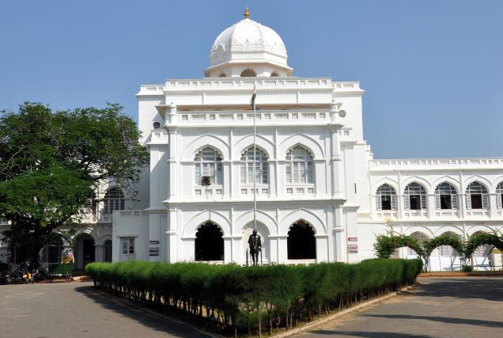
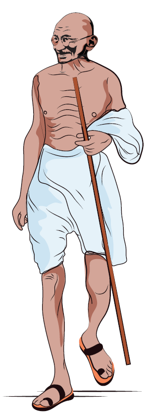
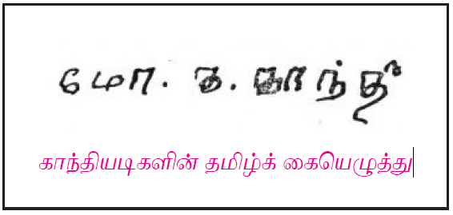

நுழையும் முன்
காந்தியடிகள் இந்திய விடுதலைக்குப் பாடுபட்டவர் என்பதை நாடு நன்கு அறியும், பெண்கள் முன்னேற்றம், சமுதாய மறுமலர்ச்சி, தீண்டாமை ஒழிப்பு முதலியவற்றுக்காகவும் அவர் பாடுபட்டார். எளிமையை ஓர் அறமாகப் போற்றினார். இந்தியாவில் அவர் காலடி படாத இடமே இல்லை, தமிழ்நாட்டின் மீதும் தமிழ்மொழியின் மீதும் காந்தியடிகள் கொண்ட பற்றினைக் காண்போம் வாருங்கள்.

மதுரையில் உள்ள காந்தி அருங்காட்சியகம்
காந்தியடிகளுக்குத் தமிழ்நாட்டின் மீதும் தமிழ் மக்கள் மீதும் மிகுந்த அன்பு உண்டு. அவர் பலமுறை தமிழ்நாட்டில் பயணம் செய்துள்ளார். அப்போது சுவையான பல நிகழ்வுகள் நடந்துள்ளன. அவற்றில் சிலவற்றைக் காணலாம்.
1919 ஆம் ஆண்டு பிப்ரவரி மாதம் காந்தியடிகள் சென்னைக்கு வந்தார். அப்போது ஆங்கில அரசு ரௌலட் சட்டம் என்னும் கடுமையான சட்டத்தை நடைமுறைப்படுத்தி இருந்தது. அதனை எதிர்த்துப் பெரிய போராட்டத்தை நடத்தக் காந்தியடிகள் திட்டமிட்டார். அதைப் பற்றிய கருத்தாய்வுக் கூட்டம் இராஜாஜியின் வீட்டில் நடைபெற்றது. காந்தியடிகள், அங்கு ஒரு மெத்தையில் அமர்ந்து இருந்தார். அவருக்கு அருகில் இராஜாஜியும் மற்ற தலைவர்களும் நின்றுகொண்டு இருந்தனர்.
அப்போது அங்கு வந்த பாரதியார் விரைந்து சென்று காந்தியடிகளின் அருகில் அமர்ந்தார். “திரு காந்தி அவர்களே! நான் இன்று மாலை ஒரு பொதுக்கூட்டத்திற்கு ஏற்பாடு செய்துள்ளேன். அதற்குத் தாங்கள் தலைமை தாங்க முடியுமா?” என்று கேட்டார். “இன்று எனக்கு வேறு பணி இருக்கிறது. உங்கள் பொதுக்கூட்டத்தை நாளை நடத்த முடியுமா?” என்று கேட்டார் காந்தியடிகள். “அது முடியாது. திட்டமிட்டபடி கூட்டம் நடக்கும். தாங்கள் தொடங்கப்போகும் இயக்கத்துக்கு என் வாழ்த்துகள்” என்று கூறிய பாரதியார்”நான் போய் வருகிறேன்” என்று கூறி எழுந்து சென்றுவிட்டார்.
அவர் சென்றதும் ”இவர் யார்?” என்று காந்தி வியப்புடன் கேட்டார். “இவர் எங்கள் தமிழ்நாட்டுக் கவிஞர்” என்றார் இராஜாஜி. ”அப்படியா! இவரைப் பத்திரமாகப் பாதுகாக்க வேண்டும்” என்றார் காந்தியடிகள். இந்நிகழ்ச்சியின் மூலம் பாரதியார் பற்றிய காந்தியடிகளின் மதிப்பீட்டை அறியலாம்.
1921 ஆம் ஆண்டு செப்டம்பர் மாதத்தில் காந்தியடிகள் தமிழ்நாட்டிற்கு வந்தார். அப்போது புகைவண்டியில் மதுரைக்குச் சென்றார். செல்லும் வழியில் பெரும்பாலான மக்கள் இடுப்பில் ஒரு துண்டு மட்டுமே அணிந்து இருப்பதைக் கண்டார். அப்போது காந்தியடிகள் நீளமான வேட்டி, மேல்சட்டை, பெரிய தலைப்பாகை அணிவதை வழக்கமாகக் கொண்டிருந்தார்.

பெரும்பாலான இந்தியர்கள் போதிய உடைகள் இல்லாமல் இருக்கிறார்கள். தான் மட்டும் இவ்வளவு துணிகளை அணிவதா? என்று சிந்தித்தார். அன்றுமுதல் வேட்டியும் துண்டும் மட்டுமே அணியத் தொடங்கினார். அவரது தோற்றத்தில் மிகப்பெரிய மாற்றத்தை ஏற்படுத்திய பெருமை தமிழ்நாட்டுக்கு உண்டு. அந்தக் கோலத்திலேயே தம் வாழ்நாள் முழுவதும் இருந்தார். உலகம் போற்றிய எளிமைத் திருக்கோலம் இதுவாகும்.
காந்தியடிகள் ஒருமுறை காரைக்குடியைச் சுற்றியுள்ள ஊர்களில் சுற்றுப்பயணம் செய்தார். அப்போது கானாடுகாத்தான் என்னும் ஊரில் அன்பர் ஒருவர் வீட்டில் தங்கி இருந்தார். அந்த வீடு மிகவும் ஆடம்பரமாக இருந்தது. வீட்டில் எங்குப் பார்த்தாலும் வெளிநாட்டு அலங்காரப் பொருள்கள் நிறைந்து இருந்தன. காந்தியடிகள் அந்த அன்பரிடம்,” உங்கள் வீட்டை வெளிநாட்டுப் பொருள்களால் அழகு செய்து இருக்கிறீர்கள். அதற்குச் செலவு செய்த பணத்தில் பத்தில் ஒரு பங்கு பணத்தை எண்ணிடம் கொடுத்தால் போதும். இதைவிட அழகாக செய்துவிடுவேன்” என்று கூறினார். அதனைக் கேட்டு, அன்பர் தலைகுனிந்தார். அந்த வீட்டுக்கு காந்தியடிகள் மறுமுறை வந்தபோது அங்கே வெளிநாட்டுப் பொருள்கள் ஒன்றுகூட இல்லை. காந்தியடிகள் மகிழ்வுடன் அவரைப் பாராட்டினார்.
காந்தியடிகள் ஒருமுறை மதுரையில் தங்கி இருந்தார். மீனாட்சி அம்மன் கோவிலுக்குச் சென்று வரலாம் என்று தலைவர்கள் அவரை அழைத்தனர். அந்தக் கோவிலுக்குள் செல்ல எல்லா மக்களுக்கும் அனுமதி உண்டா? என்று காந்தியடிகள் கேட்டார். அங்கு இருந்தவர்கள்” இல்லை” என்றனர். அப்படியானால் அங்கே வரமாட்டேன்” என்று கூறிவிட்டார். பல ஆண்டுகளுக்குப் பிறகு அந்தக் கோவிலுக்குள் செல்ல அனைவருக்கும் உரிமை உண்டு என்று அறிவிக்கப்பட்டது. அதன் பிறகு மதுரைக்கு வந்த போதுதான் காந்தியடிகள் மீனாட்சி அம்மன் கோவிலுக்குள் சென்றார்.
இதே போன்ற நிகழ்ச்சி குற்றாலத்திலும் நடைபெற்றது. குற்றால அருவியில் நீராட அனைவருக்கும் உரிமை அளிக்கப்பட்டு இருந்தது. ஆனால் அருவிக்குச் செல்லும் வழியில் ஒரு கோவில் இருந்தது. அதன் வழியாகச் செல்ல ஒருசாராருக்குத் தடை நீராட முடியாத நிலை இருந்தது. எனவே அனைவரும் அருவியில் நீராட முடியாத நிலை இருந்தது. அதனை அறிந்த காந்தியடிகள் குற்றால அருவியில் நீராட மறுத்துவிட்டார். மனிதர்களிடம் உயர்வு தாழ்வு பாராட்டக் கூடாது என்பதில் காந்தியடிகள் உறுதியாக இருந்ததை இதன் மூலம் அறிய முடிகிறது.

காந்தியடிகள் தமக்கும் தமிழுக்கும் உள்ள தொடர்பைப் பற்றிய பலமுறை கூறியுள்ளார். தென்னாப்பிரிக்காவில் வாழ்ந்த காலத்தில் தமிழ்மொழியைக் கற்கத் தொடங்கியதாகக் கூறியுள்ளார். ஜி யு போப் எழுதிய தமிழ்க்கையேடு தம்மைக் கவர்ந்ததாகவும் குறிப்பிட்டு உள்ளார். திருக்குறள் அவரைப் பெரிதும் கவர்ந்த நூலாகும்.
1937 ஆம் ஆண்டு சென்னையில் இலக்கிய மாநாடு ஒன்று நடைபெற்றது. அம்மாநாட்டுக்குக் காந்தியடிகள் தலைமை வகித்தார். உ வே சாமிநாதர் வரவேற்புக்குழுத் தலைவராக இருந்தார். உ வே சாமிநாதர் உரையைக் கேட்ட காந்தியடிகள் மகிழ்ந்தார்” இந்தப் பெரியவரின் அடி நிழலில் இருந்து தமிழ் கற்க வேண்டும் என்னும் ஆவல் உண்டாகிறது” என்று கூறினார் காந்தியடிகள்.
இந்நிகழ்வுகள் மூலம் ஏற்றத்தாழ்வு அற்ற சமுதாயம் மலர வேண்டும் என்னும் காந்தியடிகளின் உள்ள உறுதியை அறிந்து கொள்ளலாம். மேலும் அவர் தமிழ் மொழியின் மீது கொண்ட பற்றையும் அறிந்து கொள்ள முடிகிறது.
கற்பவை கற்றபின்
1. காந்தியடிகளிடம் உடை அணிவதில் மாற்றத்தை ஏற்படுத்திய ஊர் டேஷ்
அ) கோவை
ஆ) மதுரை
இ) தஞ்சாவூர்
ஈ) சிதம்பரம்
2. காந்தியடிகள் டேஷ் அடி நிழலில் இருந்து தமிழ் கற்க வேண்டும் என்று விரும்பினார்.
அ) நாமக்கல் கவிஞர்
ஆ) பாரதிதாசன்
இ) உ வே சாமிநாதர்
ஈ) பாரதியார்
1) இலக்கிய மாநாடு - பாரதியார்
2) தமிழ்நாட்டுக் கவிஞர் - சென்னை
3) குற்றாலம் – ஜி யு போப்
4) தமிழ்க் கையேடு - அருவி
1) ஆலோசனை
2) பாதுகாக்க
3) மாற்றம்
4) ஆடம்பரம்
1. காந்தியடிகள் மதுரை மீனாட்சியம்மன் கோவிலுக்குள் முதலில் ஏன் நுழையவில்லை?
2. காந்தியடிகளுக்கு தமிழ் கற்கும் ஆர்வத்தை ஏற்படுத்திய நிகழ்வைக் கூறுக.
1. காந்தியடிகளின் உடை மாற்றத்திற்குக் காரணமாக அமைந்த நிகழ்வினை எழுதுக.
2. காந்தியடிகளுக்கும் தமிழுக்கும் உள்ள தொடர்பை எழுதுக.
காந்தியடிகளிடம் காணப்படும் உயர்ந்த பண்புகளாக நீங்கள் கருதுபவை யாவை?